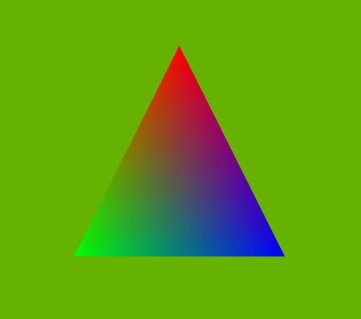

QRhiWidget Class
The QRhiWidget class is a widget for rendering 3D graphics via an accelerated grapics API, such as Vulkan, Metal, or Direct 3D. More...
| Header: | #include <QRhiWidget> |
| CMake: | find_package(Qt6 REQUIRED COMPONENTS Widgets) target_link_libraries(mytarget PRIVATE Qt6::Widgets) |
| qmake: | QT += widgets |
| Since: | Qt 6.7 |
| Inherits: | QWidget |
| Status: | Preliminary |
This class is under development and is subject to change.
Public Types
| enum class | Api { Null, OpenGL, Metal, Vulkan, Direct3D11, Direct3D12 } |
| enum class | TextureFormat { RGBA8, RGBA16F, RGBA32F, RGB10A2 } |
Properties
|
|
Public Functions
| QRhiWidget(QWidget *parent = nullptr, Qt::WindowFlags f = {}) | |
| virtual | ~QRhiWidget() override |
| QRhiWidget::Api | api() const |
| QRhiWidget::TextureFormat | colorBufferFormat() const |
| QSize | fixedColorBufferSize() const |
| QImage | grabFramebuffer() const |
| bool | isDebugLayerEnabled() const |
| bool | isMirrorVerticallyEnabled() const |
| int | sampleCount() const |
| void | setApi(QRhiWidget::Api api) |
| void | setColorBufferFormat(QRhiWidget::TextureFormat format) |
| void | setDebugLayerEnabled(bool enable) |
| void | setFixedColorBufferSize(QSize pixelSize) |
| void | setFixedColorBufferSize(int w, int h) |
| void | setMirrorVertically(bool enabled) |
| void | setSampleCount(int samples) |
Signals
| void | colorBufferFormatChanged(QRhiWidget::TextureFormat format) |
| void | fixedColorBufferSizeChanged(const QSize &pixelSize) |
| void | frameSubmitted() |
| void | mirrorVerticallyChanged(bool enabled) |
| void | renderFailed() |
| void | sampleCountChanged(int samples) |
Protected Functions
| QRhiTexture * | colorTexture() const |
| QRhiRenderBuffer * | depthStencilBuffer() const |
| virtual void | initialize(QRhiCommandBuffer *cb) |
| QRhiRenderBuffer * | msaaColorBuffer() const |
| virtual void | releaseResources() |
| virtual void | render(QRhiCommandBuffer *cb) |
| QRhiRenderTarget * | renderTarget() const |
| QRhiTexture * | resolveTexture() const |
| QRhi * | rhi() const |
| void | setAutoRenderTarget(bool enabled) |
Reimplemented Protected Functions
| virtual bool | event(QEvent *e) override |
| virtual void | paintEvent(QPaintEvent *e) override |
| virtual void | resizeEvent(QResizeEvent *e) override |
Detailed Description
Note: QRhiWidget is in tech preview in Qt 6.7. The API is under development and subject to change.
QRhiWidget provides functionality for displaying 3D content rendered through the QRhi APIs within a QWidget-based application. In many ways it is the portable equivalent of QOpenGLWidget that is not tied to a single 3D graphics API, but rather can function with all the APIs QRhi supports (such as, Direct 3D 11/12, Vulkan, Metal, and OpenGL).
QRhiWidget is expected to be subclassed. To render into the 2D texture that is implicitly created and managed by the QRhiWidget, subclasses should reimplement the virtual functions initialize() and render().
The size of the texture will by default adapt to the size of the widget. If a fixed size is preferred, set a fixed size specified in pixels by calling setFixedColorBufferSize().
In addition to the texture serving as the color buffer, a depth/stencil buffer and a render target binding these together is maintained implicitly as well.
The QRhi for the widget's top-level window is configured to use a platform-specific backend and graphics API by default: Metal on macOS and iOS, Direct 3D 11 on Windows, OpenGL otherwise. Call setApi() to override this.
Note: A single widget window can only use one QRhi backend, and so one single 3D graphics API. If two QRhiWidget or QQuickWidget widgets in the window's widget hierarchy request different APIs, only one of them will function correctly.
Note: While QRhiWidget is a public Qt API, the QRhi family of classes in the Qt Gui module, including QRhi, QShader and QShaderDescription, offer limited compatibility guarantees. There are no source or binary compatibility guarantees for these classes, meaning the API is only guaranteed to work with the Qt version the application was developed against. Source incompatible changes are however aimed to be kept at a minimum and will only be made in minor releases (6.7, 6.8, and so on). qrhiwidget.h does not directly include any QRhi-related headers. To use those classes when implementing a QRhiWidget subclass, link to Qt::GuiPrivate (if using CMake), and include the appropriate headers with the rhi prefix, for example #include <rhi/qrhi.h>.
An example of a simple QRhiWidget subclass rendering a triangle is the following:
class ExampleRhiWidget : public QRhiWidget { public: ExampleRhiWidget(QWidget *parent = nullptr) : QRhiWidget(parent) { } void initialize(QRhiCommandBuffer *cb) override; void render(QRhiCommandBuffer *cb) override; private: QRhi *m_rhi = nullptr; std::unique_ptr<QRhiBuffer> m_vbuf; std::unique_ptr<QRhiBuffer> m_ubuf; std::unique_ptr<QRhiShaderResourceBindings> m_srb; std::unique_ptr<QRhiGraphicsPipeline> m_pipeline; QMatrix4x4 m_viewProjection; float m_rotation = 0.0f; }; float vertexData[] = { 0.0f, 0.5f, 1.0f, 0.0f, 0.0f, -0.5f, -0.5f, 0.0f, 1.0f, 0.0f, 0.5f, -0.5f, 0.0f, 0.0f, 1.0f, }; QShader getShader(const QString &name) { QFile f(name); return f.open(QIODevice::ReadOnly) ? QShader::fromSerialized(f.readAll()) : QShader(); } void ExampleRhiWidget::initialize(QRhiCommandBuffer *cb) { if (m_rhi != rhi()) { m_pipeline.reset(); m_rhi = rhi(); } if (!m_pipeline) { m_vbuf.reset(m_rhi->newBuffer(QRhiBuffer::Immutable, QRhiBuffer::VertexBuffer, sizeof(vertexData))); m_vbuf->create(); m_ubuf.reset(m_rhi->newBuffer(QRhiBuffer::Dynamic, QRhiBuffer::UniformBuffer, 64)); m_ubuf->create(); m_srb.reset(m_rhi->newShaderResourceBindings()); m_srb->setBindings({ QRhiShaderResourceBinding::uniformBuffer(0, QRhiShaderResourceBinding::VertexStage, m_ubuf.get()), }); m_srb->create(); m_pipeline.reset(m_rhi->newGraphicsPipeline()); m_pipeline->setShaderStages({ { QRhiShaderStage::Vertex, getShader(QLatin1String(":/shader_assets/color.vert.qsb")) }, { QRhiShaderStage::Fragment, getShader(QLatin1String(":/shader_assets/color.frag.qsb")) } }); QRhiVertexInputLayout inputLayout; inputLayout.setBindings({ { 5 * sizeof(float) } }); inputLayout.setAttributes({ { 0, 0, QRhiVertexInputAttribute::Float2, 0 }, { 0, 1, QRhiVertexInputAttribute::Float3, 2 * sizeof(float) } }); m_pipeline->setVertexInputLayout(inputLayout); m_pipeline->setShaderResourceBindings(m_srb.get()); m_pipeline->setRenderPassDescriptor(renderTarget()->renderPassDescriptor()); m_pipeline->create(); QRhiResourceUpdateBatch *resourceUpdates = m_rhi->nextResourceUpdateBatch(); resourceUpdates->uploadStaticBuffer(m_vbuf.get(), vertexData); cb->resourceUpdate(resourceUpdates); } const QSize outputSize = colorTexture()->pixelSize(); m_viewProjection = m_rhi->clipSpaceCorrMatrix(); m_viewProjection.perspective(45.0f, outputSize.width() / (float) outputSize.height(), 0.01f, 1000.0f); m_viewProjection.translate(0, 0, -4); } void ExampleRhiWidget::render(QRhiCommandBuffer *cb) { QRhiResourceUpdateBatch *resourceUpdates = m_rhi->nextResourceUpdateBatch(); m_rotation += 1.0f; QMatrix4x4 modelViewProjection = m_viewProjection; modelViewProjection.rotate(m_rotation, 0, 1, 0); resourceUpdates->updateDynamicBuffer(m_ubuf.get(), 0, 64, modelViewProjection.constData()); const QColor clearColor = QColor::fromRgbF(0.4f, 0.7f, 0.0f, 1.0f); cb->beginPass(renderTarget(), clearColor, { 1.0f, 0 }, resourceUpdates); cb->setGraphicsPipeline(m_pipeline.get()); const QSize outputSize = colorTexture()->pixelSize(); cb->setViewport(QRhiViewport(0, 0, outputSize.width(), outputSize.height())); cb->setShaderResources(); const QRhiCommandBuffer::VertexInput vbufBinding(m_vbuf.get(), 0); cb->setVertexInput(0, 1, &vbufBinding); cb->draw(3); cb->endPass(); update(); }
This is a widget that continuously requests updates, throttled by the presentation rate (vsync, depending on the screen refresh rate). If rendering continuously is not desired, the update() call in render() should be removed, and rather issued only when updating the rendered content is necessary. For example, if the rotation of the cube should be tied to the value of a QSlider, then connecting the slider's value change signal to a slot or lambda that forwards the new value and calls update() is sufficient.
The vertex and fragment shaders are provided as Vulkan-style GLSL and must be processed first by the Qt shader infrastructure first. This is achieved either by running the qsb command-line tool manually, or by using the qt_add_shaders() function in CMake. The QRhiWidget implementation loads these pre-processed .qsb files that are shipped with the application. See Qt Shader Tools for more information about Qt's shader translation infrastructure.
The source code for these shaders could be the following:
color.vert
#version 440
layout(location = 0) in vec4 position;
layout(location = 1) in vec3 color;
layout(location = 0) out vec3 v_color;
layout(std140, binding = 0) uniform buf {
mat4 mvp;
};
void main()
{
v_color = color;
gl_Position = mvp * position;
}
color.frag
#version 440
layout(location = 0) in vec3 v_color;
layout(location = 0) out vec4 fragColor;
void main()
{
fragColor = vec4(v_color, 1.0);
}
The result is a widget that shows the following:

For a complete, minimal, introductory example check out the Simple RHI Widget Example.
For an example with more functionality and demonstration of further concepts, see the Cube RHI Widget Example.
QRhiWidget always involves rendering into a backing texture, not directly to the window (the surface or layer provided by the windowing system for the native window). This allows properly compositing the content with the rest of the widget-based UI, and offering a simple and compact API, making it easy to get started. All this comes at the expense of additional resources and a potential effect on performance. This is often perfectly acceptable in practice, but advanced users should keep in mind the pros and cons of the different approaches. Refer to the RHI Window Example and compare it with the Simple RHI Widget Example for details about the two approaches.
Reparenting a QRhiWidget into a widget hierarchy that belongs to a different window (top-level widget), or making the QRhiWidget itself a top-level (by setting the parent to nullptr), involves changing the associated QRhi (and potentially destroying the old one) while the QRhiWidget continues to stay alive and well. To support this, robust QRhiWidget implementations are expected to reimplement the releaseResources() virtual function as well, and drop their QRhi resources just as they do in the destructor. The Cube RHI Widget Example demonstrates this in practice.
While not a primary use case, QRhiWidget also allows incorporating rendering code that directly uses a 3D graphics API such as Vulkan, Metal, Direct 3D, or OpenGL. See QRhiCommandBuffer::beginExternal() for details on recording native commands within a QRhi render pass, as well as QRhiTexture::createFrom() for a way to wrap an existing native texture and then use it with QRhi in a subsequent render pass. Note however that the configurability of the underlying graphics API (its device or context features, layers, extensions, etc.) is going to be limited since QRhiWidget's primary goal is to provide an environment suitable for QRhi-based rendering code, not to enable arbitrary, potentially complex, foreign rendering engines.
See also QRhi, QShader, QOpenGLWidget, Simple RHI Widget Example, and Cube RHI Widget Example.
Member Type Documentation
enum class QRhiWidget::Api
Specifies the 3D API and QRhi backend to use
| Constant | Value |
|---|---|
QRhiWidget::Api::Null | 0 |
QRhiWidget::Api::OpenGL | 1 |
QRhiWidget::Api::Metal | 2 |
QRhiWidget::Api::Vulkan | 3 |
QRhiWidget::Api::Direct3D11 | 4 |
QRhiWidget::Api::Direct3D12 | 5 |
See also QRhi.
enum class QRhiWidget::TextureFormat
Specifies the format of the texture to which the QRhiWidget renders.
| Constant | Value | Description |
|---|---|---|
QRhiWidget::TextureFormat::RGBA8 | 0 | See QRhiTexture::RGBA8. |
QRhiWidget::TextureFormat::RGBA16F | 1 | See QRhiTexture::RGBA16F. |
QRhiWidget::TextureFormat::RGBA32F | 2 | See QRhiTexture::RGBA32F. |
QRhiWidget::TextureFormat::RGB10A2 | 3 | See QRhiTexture::RGB10A2. |
See also QRhiTexture.
Property Documentation
autoRenderTarget : const bool
The current setting for automatic depth-stencil buffer and render target maintenance.
By default the value is true.
colorBufferFormat : TextureFormat
This property controls the texture format of the texture (or renderbuffer) used as the color buffer. The default value is TextureFormat::RGBA8. QRhiWidget supports rendering to a subset of the formats supported by QRhiTexture. Only formats that are reported as supported from QRhi::isTextureFormatSupported() should be specified, rendering will not be functional otherwise.
Note: Setting a new format when the widget is already initialized and has rendered implies that all QRhiGraphicsPipeline objects created by the renderer may become unusable, if the associated QRhiRenderPassDescriptor is now incompatible due to the different texture format. Similarly to changing sampleCount dynamically, this means that initialize() or render() implementations must then take care of releasing the existing pipelines and creating new ones.
Access functions:
| QRhiWidget::TextureFormat | colorBufferFormat() const |
| void | setColorBufferFormat(QRhiWidget::TextureFormat format) |
Notifier signal:
| void | colorBufferFormatChanged(QRhiWidget::TextureFormat format) |
fixedColorBufferSize : QSize
The fixed size, in pixels, of the QRhiWidget's associated texture. Relevant when a fixed texture size is desired that does not depend on the widget's size. This size has no effect on the geometry of the widget (its size and placement within the top-level window), which means the texture's content will appear stretched (scaled up) or scaled down onto the widget's area.
For example, setting a size that is exactly twice the widget's (pixel) size effectively performs 2x supersampling (rendering at twice the resolution and then implicitly scaling down when texturing the quad corresponding to the widget in the window).
By default the value is a null QSize. A null or empty QSize means that the texture's size follows the QRhiWidget's size. (texture size = widget size * device pixel ratio).
Access functions:
| QSize | fixedColorBufferSize() const |
| void | setFixedColorBufferSize(QSize pixelSize) |
| void | setFixedColorBufferSize(int w, int h) |
Notifier signal:
| void | fixedColorBufferSizeChanged(const QSize &pixelSize) |
mirrorVertically : bool
When enabled, flips the image around the X axis when compositing the QRhiWidget's backing texture with the rest of the widget content in the top-level window.
The default value is false.
Access functions:
| bool | isMirrorVerticallyEnabled() const |
| void | setMirrorVertically(bool enabled) |
Notifier signal:
| void | mirrorVerticallyChanged(bool enabled) |
sampleCount : int
This property controls for sample count for multisample antialiasing. By default the value is 1 which means MSAA is disabled.
Valid values are 1, 4, 8, and sometimes 16 and 32. QRhi::supportedSampleCounts() can be used to query the supported sample counts at run time, but typically applications should request 1 (no MSAA), 4x (normal MSAA) or 8x (high MSAA).
Note: Setting a new value implies that all QRhiGraphicsPipeline objects created by the renderer must use the same sample count from then on. Existing QRhiGraphicsPipeline objects created with a different sample count must not be used anymore. When the value changes, all color and depth-stencil buffers are destroyed and recreated automatically, and initialize() is invoked again. However, when autoRenderTarget is false, it will be up to the application to manage this with regards to the depth-stencil buffer or additional color buffers.
Changing the sample count from the default 1 to a higher value implies that colorTexture() becomes nullptr and msaaColorBuffer() starts returning a valid object. Switching back to 1 (or 0), implies the opposite: in the next call to initialize() msaaColorBuffer() is going to return nullptr, whereas colorTexture() becomes once again valid. In addition, resolveTexture() returns a valid (non-multisample) QRhiTexture whenever the sample count is greater than 1 (i.e., MSAA is in use).
Access functions:
| int | sampleCount() const |
| void | setSampleCount(int samples) |
Notifier signal:
| void | sampleCountChanged(int samples) |
See also msaaColorBuffer() and resolveTexture().
Member Function Documentation
[explicit] QRhiWidget::QRhiWidget(QWidget *parent = nullptr, Qt::WindowFlags f = {})
Constructs a widget which is a child of parent, with widget flags set to f.
[override virtual noexcept] QRhiWidget::~QRhiWidget()
Destructor.
QRhiWidget::Api QRhiWidget::api() const
Returns the currently set graphics API (QRhi backend).
See also setApi().
[protected] QRhiTexture *QRhiWidget::colorTexture() const
Returns the texture serving as the color buffer for the widget.
Must only be called from initialize() and render().
Unlike the depth-stencil buffer and the QRhiRenderTarget, this texture is always available and is managed by the QRhiWidget, independent of the value of autoRenderTarget.
Note: When sampleCount is larger than 1, and so multisample antialiasing is enabled, the return value is nullptr. Instead, query the QRhiRenderBuffer by calling msaaColorBuffer().
Note: The backing texture size and sample count can also be queried via the QRhiRenderTarget returned from renderTarget(). This can be more convenient and compact than querying from the QRhiTexture or QRhiRenderBuffer, because it works regardless of multisampling is in use or not.
See also msaaColorBuffer(), depthStencilBuffer(), renderTarget(), and resolveTexture().
[protected] QRhiRenderBuffer *QRhiWidget::depthStencilBuffer() const
Returns the depth-stencil buffer used by the widget's rendering.
Must only be called from initialize() and render().
Available only when autoRenderTarget is true. Otherwise the returned value is nullptr and it is up the reimplementation of initialize() to create and manage a depth-stencil buffer and a QRhiTextureRenderTarget.
See also colorTexture() and renderTarget().
[override virtual protected] bool QRhiWidget::event(QEvent *e)
Reimplements: QWidget::event(QEvent *event).
[signal] void QRhiWidget::frameSubmitted()
This signal is emitted after the widget's top-level window has finished composition and has submitted a frame.
QImage QRhiWidget::grabFramebuffer() const
Renders a new frame, reads the contents of the texture back, and returns it as a QImage.
When an error occurs, a null QImage is returned.
The returned QImage will have a format of QImage::Format_RGBA8888, QImage::Format_RGBA16FPx4, QImage::Format_RGBA32FPx4, or QImage::Format_BGR30, depending on colorBufferFormat().
QRhiWidget does not know the renderer's approach to blending and composition, and therefore cannot know if the output has alpha premultiplied in the RGB color values. Thus _Premultiplied QImage formats are never used for the returned QImage, even when it would be appropriate. It is up to the caller to reinterpret the resulting data as it sees fit.
Note: This function can also be called when the QRhiWidget is not added to a widget hierarchy belonging to an on-screen top-level window. This allows generating an image from a 3D rendering off-screen.
The function is named grabFramebuffer() for consistency with QOpenGLWidget and QQuickWidget. It is not the only way to get CPU-side image data out of the QRhiWidget's content: calling QWidget::grab() on a QRhiWidget, or an ancestor of it, is functional as well (returning a QPixmap). Besides working directly with QImage, another advantage of grabFramebuffer() is that it may be slightly more performant, simply because it does not have to go through the rest of QWidget infrastructure but can right away trigger rendering a new frame and then do the readback.
See also setColorBufferFormat().
[virtual protected] void QRhiWidget::initialize(QRhiCommandBuffer *cb)
Called when the widget is initialized for the first time, when the associated texture's size, format, or sample count changes, or when the QRhi and texture change for any reason. The function is expected to maintain (create if not yet created, adjust and rebuild if the size has changed) the graphics resources used by the rendering code in render().
To query the QRhi, QRhiTexture, and other related objects, call rhi(), colorTexture(), depthStencilBuffer(), and renderTarget().
When the widget size changes, the QRhi object, the color buffer texture, and the depth stencil buffer objects are all the same instances (so the getters return the same pointers) as before, but the color and depth/stencil buffers will likely have been rebuilt, meaning the size and the underlying native texture resource may be different than in the last invocation.
Reimplementations should also be prepared that the QRhi object and the color buffer texture may change between invocations of this function. One special case where the objects will be different is when performing a grabFramebuffer() with a widget that is not yet shown, and then making the widget visible on-screen within a top-level widget. There the grab will happen with a dedicated QRhi that is then replaced with the top-level window's associated QRhi in subsequent initialize() and render() invocations. Another, more common case is when the widget is reparented so that it belongs to a new top-level window. In this case the QRhi and all related resources managed by the QRhiWidget will be different instances than before in the subsequent call to this function. Is is then important that all existing QRhi resources previously created by the subclass are destroyed because they belong to the previous QRhi that should not be used by the widget anymore.
When autoRenderTarget is true, which is the default, a depth-stencil QRhiRenderBuffer and a QRhiTextureRenderTarget associated with colorTexture() (or msaaColorBuffer()) and the depth-stencil buffer are created and managed automatically. Reimplementations of initialize() and render() can query those objects via depthStencilBuffer() and renderTarget(). When autoRenderTarget is set to false, these objects are no longer created and managed automatically. Rather, it will be up the the initialize() implementation to create buffers and set up the render target as it sees fit. When manually managing additional color or depth-stencil attachments for the render target, their size and sample count must always follow the size and sample count of colorTexture() / msaaColorBuffer(), otherwise rendering or 3D API validation errors may occur.
The subclass-created graphics resources are expected to be released in the destructor implementation of the subclass.
cb is the QRhiCommandBuffer for the current frame of the widget. The function is called with a frame being recorded, but without an active render pass. The command buffer is provided primarily to allow enqueuing resource updates without deferring to render().
See also render().
bool QRhiWidget::isDebugLayerEnabled() const
Returns true if a debug or validation layer will be requested if applicable to the graphics API in use.
See also setDebugLayerEnabled().
[protected] QRhiRenderBuffer *QRhiWidget::msaaColorBuffer() const
Returns the renderbuffer serving as the multisample color buffer for the widget.
Must only be called from initialize() and render().
When sampleCount is larger than 1, and so multisample antialising is enabled, the returned QRhiRenderBuffer has a matching sample count and serves as the color buffer. Graphics pipelines used to render into this buffer must be created with the same sample count, and the depth-stencil buffer's sample count must match as well. The multisample content is expected to be resolved into the texture returned from resolveTexture(). When autoRenderTarget is true, renderTarget() is set up automatically to do this, by setting up msaaColorBuffer() as the renderbuffer of color attachment 0 and resolveTexture() as its resolveTexture.
When MSAA is not in use, the return value is nullptr. Use colorTexture() instead then.
Depending on the underlying 3D graphics API, there may be no practical difference between multisample textures and color renderbuffers with a sample count larger than 1 (QRhi may just map both to the same native resource type). Some older APIs however may differentiate between textures and renderbuffers. In order to support OpenGL ES 3.0, where multisample renderbuffers are available, but multisample textures are not, QRhiWidget always performs MSAA by using a multisample QRhiRenderBuffer as the color attachment (and never a multisample QRhiTexture).
Note: The backing texture size and sample count can also be queried via the QRhiRenderTarget returned from renderTarget(). This can be more convenient and compact than querying from the QRhiTexture or QRhiRenderBuffer, because it works regardless of multisampling is in use or not.
See also colorTexture(), depthStencilBuffer(), renderTarget(), and resolveTexture().
[override virtual protected] void QRhiWidget::paintEvent(QPaintEvent *e)
Reimplements: QWidget::paintEvent(QPaintEvent *event).
Handles paint events.
Calling QWidget::update() will lead to sending a paint event e, and thus invoking this function. The sending of the event is asynchronous and will happen at some point after returning from update(). This function will then, after some preparation, call the virtual render() to update the contents of the QRhiWidget's associated texture. The widget's top-level window will then composite the texture with the rest of the window.
[virtual protected] void QRhiWidget::releaseResources()
Called when the need to early-release the graphics resources arises.
This normally does not happen for a QRhiWidget that is added to a top-level widget's child hierarchy and it then stays there for the rest of its and the top-level's lifetime. Thus in many cases there is no need to reimplement this function, e.g. because the application only ever has a single top-level widget (native window). However, when reparenting of the widget (or an ancestor of it) is involved, reimplementing this function will become necessary in robust, well-written QRhiWidget subclasses.
When this function is called, the implementation is expected to destroy all QRhi resources (QRhiBuffer, QRhiTexture, etc. objects), similarly to how it is expected to do this in the destructor. Nulling out, using a smart pointer, or setting a resources-invalid flag is going to be required as well, because initialize() will eventually get called afterwards. Note however that deferring the releasing of resources to the subsequent initialize() is wrong. If this function is called, the resource must be dropped before returning. Also note that implementing this function does not replace the class destructor (or smart pointers): the graphics resources must still be released in both.
See the Cube RHI Widget Example for an example of this in action. There the button that toggles the QRhiWidget between being a child widget (due to having a parent widget) and being a top-level widget (due to having no parent widget), will trigger invoking this function since the associated top-level widget, native window, and QRhi all change during the lifetime of the QRhiWidget, with the previously used QRhi getting destroyed which implies an early-release of the associated resources managed by the still-alive QRhiWidget.
Another case when this function is called is when grabFramebuffer() is used with a QRhiWidget that is not added to a visible window, i.e. the rendering is performed offscreen. If later on this QRhiWidget is made visible, or added to a visible widget hierarchy, the associated QRhi will change from the temporary one used for offscreen rendering to the window's dedicated one, thus triggering this function as well.
See also initialize().
[virtual protected] void QRhiWidget::render(QRhiCommandBuffer *cb)
Called when the widget contents (i.e. the contents of the texture) need updating.
There is always at least one call to initialize() before this function is called.
To request updates, call QWidget::update(). Calling update() from within render() will lead to updating continuously, throttled by vsync.
cb is the QRhiCommandBuffer for the current frame of the widget. The function is called with a frame being recorded, but without an active render pass.
See also initialize().
[signal] void QRhiWidget::renderFailed()
This signal is emitted whenever the widget is supposed to render to its backing texture (either due to a widget update or due to a call to grabFramebuffer()), but there is no QRhi for the widget to use, likely due to issues related to graphics configuration.
This signal may be emitted multiple times when a problem arises. Do not assume it is emitted only once. Connect with Qt::SingleShotConnection if the error handling code is to be notified only once.
[protected] QRhiRenderTarget *QRhiWidget::renderTarget() const
Returns the render target object that must be used with QRhiCommandBuffer::beginPass() in reimplementations of render().
Must only be called from initialize() and render().
Available only when autoRenderTarget is true. Otherwise the returned value is nullptr and it is up the reimplementation of initialize() to create and manage a depth-stencil buffer and a QRhiTextureRenderTarget.
When creating graphics pipelines, a QRhiRenderPassDescriptor is needed. This can be queried from the returned QRhiTextureRenderTarget by calling renderPassDescriptor().
See also colorTexture() and depthStencilBuffer().
[override virtual protected] void QRhiWidget::resizeEvent(QResizeEvent *e)
Reimplements: QWidget::resizeEvent(QResizeEvent *event).
Handles resize events that are passed in the e event parameter. Calls the virtual function initialize().
Note: Avoid overriding this function in derived classes. If that is not feasible, make sure that QRhiWidget's implementation is invoked too. Otherwise the underlying texture object and related resources will not get resized properly and will lead to incorrect rendering.
[protected] QRhiTexture *QRhiWidget::resolveTexture() const
Returns the non-multisample texture to which the multisample content is resolved.
The result is nullptr when multisample antialiasing is not enabled.
Must only be called from initialize() and render().
With MSAA enabled, this is the texture that gets composited with the rest of the QWidget content on-screen. However, the QRhiWidget's rendering must target the (multisample) QRhiRenderBuffer returned from msaaColorBuffer(). When autoRenderTarget is true, this is taken care of by the QRhiRenderTarget returned from renderTarget(). Otherwise, it is up to the subclass code to correctly configure a render target object with both the color buffer and resolve textures.
See also colorTexture().
[protected] QRhi *QRhiWidget::rhi() const
Returns the current QRhi object.
Must only be called from initialize() and render().
void QRhiWidget::setApi(QRhiWidget::Api api)
Sets the graphics API and QRhi backend to use to api.
Warning: This function must be called early enough, before the widget is added to a widget hierarchy and displayed on screen. For example, aim to call the function for the subclass constructor. If called too late, the function will have no effect.
The default value depends on the platform: Metal on macOS and iOS, Direct 3D 11 on Windows, OpenGL otherwise.
The api can only be set once for the widget and its top-level window, once it is done and takes effect, the window can only use that API and QRhi backend to render. Attempting to set another value, or to add another QRhiWidget with a different api will not function as expected.
See also setColorBufferFormat(), setDebugLayerEnabled(), and api().
[protected] void QRhiWidget::setAutoRenderTarget(bool enabled)
Controls if a depth-stencil QRhiRenderBuffer and a QRhiTextureRenderTarget is created and maintained automatically by the widget. The default value is true.
In automatic mode, the size and sample count of the depth-stencil buffer follows the color buffer texture's settings. In non-automatic mode, renderTarget() and depthStencilBuffer() always return nullptr and it is then up to the application's implementation of initialize() to take care of setting up and managing these objects.
Call this function with enabled set to false early on, for example in the derived class' constructor, to disable the automatic mode.
void QRhiWidget::setDebugLayerEnabled(bool enable)
Requests the debug or validation layer of the underlying graphics API when enable is true.
Warning: This function must be called early enough, before the widget is added to a widget hierarchy and displayed on screen. For example, aim to call the function for the subclass constructor. If called too late, the function will have no effect.
Applicable for Vulkan and Direct 3D.
By default this is disabled.
See also setApi() and isDebugLayerEnabled().